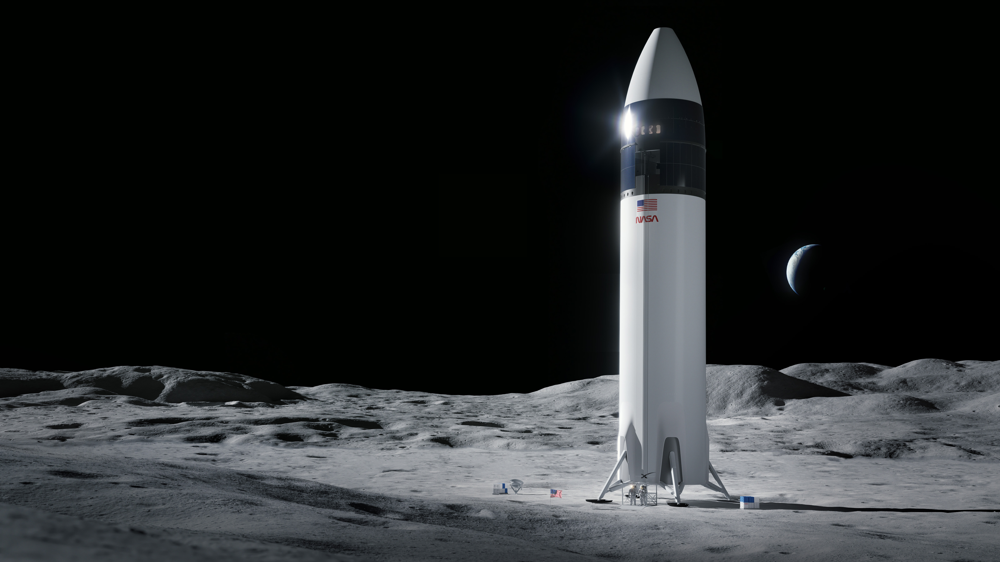
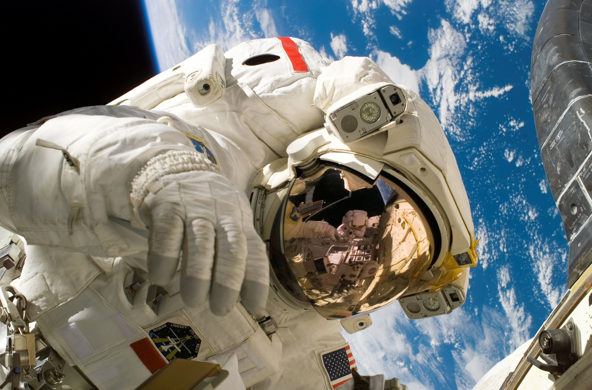

Welcome to the DASHIT Missions page! Here you can find various missions available for signup.
Available Missions
We offer a range of exciting missions and adventures, including:
Exploration of Mars
Research on Alpha Centauri
Survey of Kepler-186f
Frequently Asked Questions
Q: How do I sign up for a mission?
A: Simply fill out the form below after signing up for an account.
Q: Are there any age restrictions?
A: Yes, participants must be between the ages of 18 and 100.
We at DASHIT make it a point to keep all our missions public and available for you
to signup for. Browse through our suicide missions catalog or fill in and submit the form
below to register for a mission one you have Signed Up
It's time for you to fulfill that dream
Mission Exihiibtion

Our first mission to
Alpha Centauri had its seeds planted on the moon.
Mission Alpha Centauri
Project Base: The Moon(Lunar launch
complex DASH-01)
Objective: To explore and set up base at Alph Centauri
Mission Overview
After years of questionable research specualative engineering and a shit tone of luck,
Dashit announced its first interstellar expedition: Mission Alpha Centauri. This
historic journey marked humanity's firts attempt to reach our closest stellar neighbour
wiht zero plot armor.
"Why launch from the moon?" You may ask, the answer is simple, zero atmospheric drag
, zero air pollution and zero taxes. We were able to pull this impeccable feat thanks
to DIzz-nutsQuantis Hyperdrive developed by our scientists for
hyperspace travel using Quantum Hyperspatial Tachyonic Propagation(QHTP).

Admiral Luna Vega on his routine space walk in preparation for the 45th mission to
TrES-2b.
Space Admirals
Project Base: Eris X5
Objective: To command the future of interstellar travel through Admirals and Space Captains
Mission Overview
With the ever growing increase in space stations, outposts and bases came the
need for a group of highly trained incredible individuals that could command and foster
the ever multiplying missions and becom the lead pioneers of these missionsl. We named these folk
space admirals
The Admirals: Who are they?
The space admirals are a hand picked group of the finest minds, leaders,and strategists at DASHIT.
They are not just great at commanding space stations but also traversing the chaos of space.
These elites are chosen for their experience, bravery, and ability to remain calm even in the
worst situations.